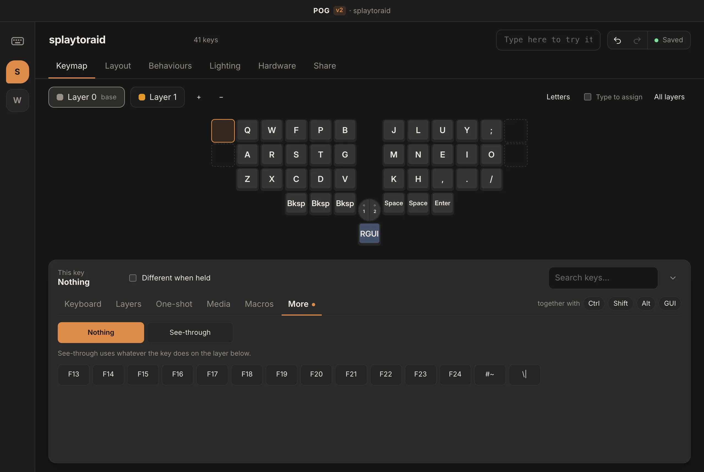

Flash one file. Press every key. Start typing.
JMK is keyboard firmware you configure after flashing. POG is the app that does it: it works out how your board is wired from the keys you press. No config files, no compiling.
macOS, Windows and Linux · free and open source
Demo Try how the setup feels. Nothing here touches a real keyboard.
- Firmware
- Find the keys
- Rows
- Keymap
Built for people who build keyboards.
Solder, plug in, press the keys. Change the wiring tomorrow and do it again in a minute. The firmware is never the part you think about.
-
Flash one file
The same prebuilt firmware for every board. POG installs it when you plug in a bare controller.
-
Press every key once
POG watches the pins and works out the wiring: one pin per key, a matrix, a duplex matrix, or a mix.
-
Show where rows end
Press the last key of each row. That gives the keys their order and the picture its shape.
-
Edit it live
You are in the editor. Keymap, layers and lights change on the keyboard as you click.

What it does
- Finds the wiring itself. Direct pins, matrix with or without diodes, duplex matrix, rotary knobs.
- Split keyboards. Over a serial cable, with two data wires or just one.
- A real keymap. Layers, hold-tap, combos, one-shot modifiers, macros you record.
- Letters in one go. QWERTY, Colemak, Colemak-DH or Dvorak on the letter keys.
- Lights. RGB underglow and per-key lights.
- One file is the whole keyboard. Wiring, layout, keymap and lights, to back up or to set up the next one.
- Updates from the app. Firmware in one click, no reset button, both halves of a split.
- Try it without hardware. Virtual keyboards run the real firmware logic.
Early, and honest about it.
This is an early alpha. The saved format can still change. I use it daily on macOS and Ubuntu on my own boards.
Built with a lot of AI help: I design it, decide what goes in and test it on my own keyboards, but most of the code was written with AI coding tools.
POG v2 follows POG, which did the same job for KMK.
| RP2040 Pi Pico and friends |
Runs on my own boards. This is the one to use. |
| nRF52840 nice!nano and friends |
Compiles, not yet run on a real board. No wireless yet. |
| Split over a cable | Works with two data wires and with one. |
| RGB lights | WS2812, on the RP2040 only. |
Got a board on the desk?
No board yet? The app comes with virtual keyboards to try all of it.